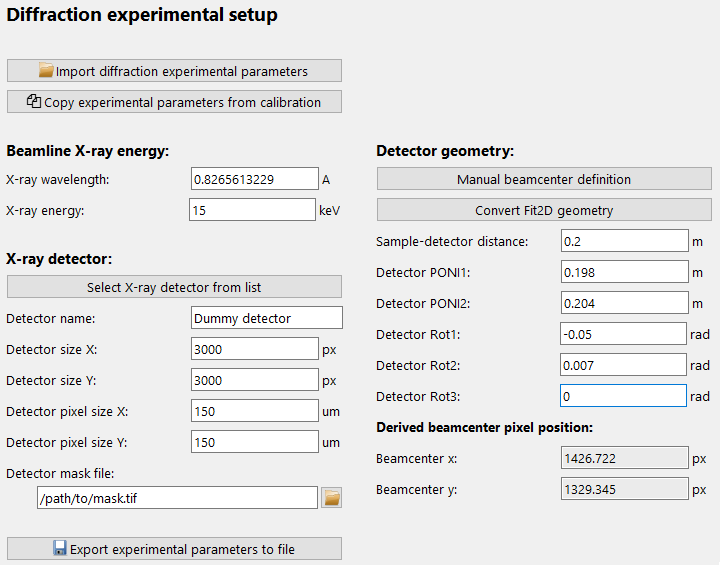
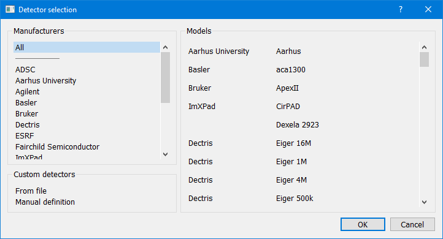
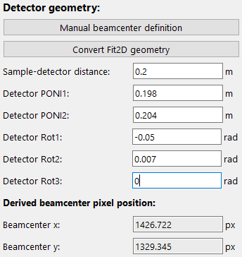
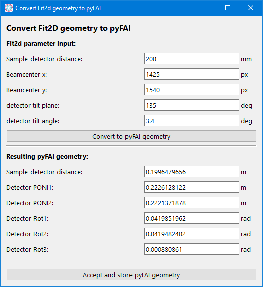
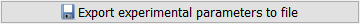

DefineDiffractionExpFrame#
The Define Diffrraction setup frame is a graphical interface to configure the
DiffractionExperimentContext
which holds information about the experimental/beamline setup.
The frame only holds the configuration widgets:
{kind=link}
Detailed description of frame items#
Import settings#
Experimental settings can be import from file. Clicking the corresponding button will open a selection dialogue to pick the file with the stored settings. File extensions will be pre-selected based on the available importers.
Copy Parameters from calibration#
If a calibration using the pyFAI calibration frame has been performed during the active session, clicking this button will copy all the required data from the last successful fit in the pyFAI calibration tool.
Beamline energy#

The beamline energy can either be copied from the pyFAI calibration tool (see Copy Parameters from calibration) or the user can update the values for either the X-ray energy (in keV) or the wavelength (in A). Updating either of these values will also modify the other value to keep them consistent.
Detector#
To select a detector and automatically update all detector Parameters, the “Select X-ray detector” button will open a new window (using the pyFAI DetectorSelectorDialog, see the screenshot below) which allows to select a detector based on manufacturer and model.
{kind=link}
Confirming the selection in the dialogue will update the detector Parameters.
Alternatively, the detector can be taken from the the pyFAI calibration, (see Copy Parameters from calibration) or all Parameters can also be entered manually in the input fields.
The last field of the detector group, the Detector pixel mask determines if a mask should be used for the pyFAI integration. This parameter is independent of the other detector Parameters and is not updated with the selection of the detector. If empty, no detector mask will be applied to the pyFAI integration.
Detector geometry#
pydidas uses the Default geometry in pyFAI and the detector position is described by the sample-detector distance, two positions for the point of normal incidence on the detector (PONI1 in vertical and PONI2 in hprizontal directions) which describe the orthogonal projection of the origin (i.e. sample) on the detector and three rotations to modify the detector position. Please refer to the pyFAI documentation for a detailed description. For the user’s convenience, the derived beamcenter pixel position in detector pixel coordinates is also displayed.
In addition to taking these settings from the pyFAI calibration (see Copy Parameters from calibration) and manual Parameter updates , pydidas also offers a tool for manually setting the beamcenter. The button Manual beamcenter definition opens a new window. The window is described in detail in Manually Set Beamcenter Window.
{kind=link}
The button Convert Fit2D geometry allows to convert an existing calibration in Fit2D geometry to pyFAI’s PONI geometry. Clicking the button temporarily disables the frame’s inputs and opens a new window to input the existing calibration: Input all parameters as required (sample-detector distance, beamcenter x/y, detector tilt plane and tilt angle). The Convet to pyFAI geometry button will calculate the resulting pyFAI geometry parameters and display them in the bottom parameter fields. The Accept and store pyFAI geometry button will close the window and copy the resulting geometry to the main frame.
Export#
All settings can be exported to file using the saving button. Clicking the button will open a dialogue to select a filename. By default, a filename filter for all supported extensions is active. The file type is selected automatically based on the extension.
Using the Diffracion Experiment settings#
The DiffractionExperimentContext
is not used directly by the user but the information is required in
applications, e.g. to run processing workflows or to determine the beam center
on the detector.
Full list of Parameters for DiffractionExperimentContext#
- xray_wavelength (float, unit: Angstrom, default: 1.0)
The X-ray wavelength. Any changes to the wavelength will also update the X-ray energy setting.
- xray_energy (float, unit: keV, default: 12.398)
The X-ray energy. Changing this parameter will also update the X-ray wavelength setting.
- detector_name (str, default: “detector”)
The detector name (in pyFAI nomenclature if used for automatic configuration).
- detector_npixx (int, default: 0)
The number of detector pixels in x direction (horizontal).
- detector_npixy (int, default: 0)
The number of detector pixels in x direction (vertical).
- detector_pxsizex (float, unit: um, default: -1)
The detector pixel size in X-direction.
- detector_pxsizey (float, unit: um, default: -1)
The detector pixel size in Y-direction.
- detector_mask_file (str, default: .)
The path to the detector mask file. If empty, this defaults to no detector mask.
- detector_dist (float, unit: m, default: 1.0)
The sample-detector distance.
- detector_poni1 (float, unit: m, default: 0.0)
The detector PONI1 (point of normal incidence; in y direction). This is measured in meters from the detector origin.
- detector_poni2 (float, unit: m, default: 0.0)
The detector PONI2 (point of normal incidence; in x direction). This is measured in meters from the detector origin.
- detector_rot1 (float, unit: rad, default: 0.0)
The detector rotation 1 (yaw; lefthanded around the “up”-axis)
- detector_rot2 (float, unit: rad, default: 0.0)
The detector rotation 2 (pitching the detector; positive direction is tilting the detector top upstream while keeping the bottom of the detector stationary.
- detector_rot3 (float, unit: rad, default: 0.0)
The detector rotation 3 (roll; around the beam axis; right-handed when looking downstream with the beam.)